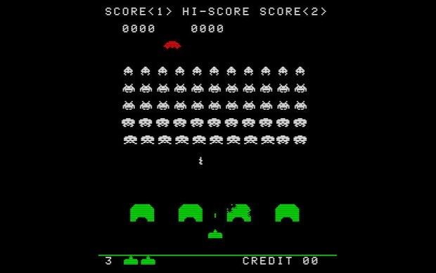

Crescimento da Indústria
Esta década é marcada pelo aparecimento das primeiras consolas e pelo crescimentoda indústria dos videojogos, tendo aparecido muitas mais empresas no mercado e ocrescimento do interesse da população por esta.
Consolas
No ano de 1966,o engenheiro Ralph Baer foi encarregado pela Sanders Associates, para desenvolver a melhor televisão do mundo. Este inicialmente pretendia criar uma TV interativa com jogos,
mas esta ideia não teve sucesso. Dois anos mais tarde desenvolveu Brown Box um protótipo que mais tarde foi comprado pela Magnox, em 1971. No ano seguinte foi lançada Odyssey 100,
a primeira consola digital, onde se podia jogar Magnavox Odyssey, o primeiro jogo para ser conectado na TV.
Em 1977, com a liderança de Bushnell, a Atari desenvolveu VCS ou Atari2600 esta foi a primeira consola a ter jogos em cassetes. Apesar desta ser bastante inovadora para a altura,
o público não sentiu atração ao produto de imediato, visto que os jogos que se podiam jogar nela eram todos baseados no Pong e o publico já estava exausto desta estética.
Pong

Jogos
Em 1971, foi lançado o Pong, pela Atari. Este jogo deu início a um novo sector da indústria dos jogos. Foi criado por Nolan Bushnell e Ted Dabneyera e este consistia numa consola ligada a uma TV que necessitava de moedas para ser jogada(Maquina Arcade). Foi estimado que este jogo lucrava 35$ a 40$ por dia, um valor bastante elevado para altura, dentro da área do entretenimento. O jogo ficou tão popular que as pessoas dirigiam-se aos cafés apenas para poderem jogar.
Space Invaders
Em 1978, foi lançado icónico Space Invaders, desenvolvido pela Taito que o licenciou a Atari e que mais tarde foi licenciado para uso em casa. Este jogo foi tao popular no Japão, que fez com que houvesse falta de moedas de 100 ienes, obrigando a Casa da Moeda Japonesa a fabricar lotes extra. Teve tanto sucesso pois era inovador. Por exemplo este foi o primeiro jogo a gravar a pontuação dos jogadores anteriores,os alienígenas eram animados movendo os seus tentáculos enquanto se moviam, para alem disto este jogo não tinha um tempo limitado, o tempo do jogo dependia apenas na habilidade de cada jogador.
Space Invaders

Easter Eggs
Nesta década também surgiu o primeiro Easter Egg. Como a Atari tinha uma política de não dar grande valor às pessoas envolvidas no desenvolvimento dos jogos, Warren Robinett, criador de Adventure, decidiu criar uma sala secreta onde estava escrito "Created by Warren Robinett", como forma de reconhecimento pelo seu trabalho. Mais tarde, a existência dos Easter Eggs tornou-se obrigatória.